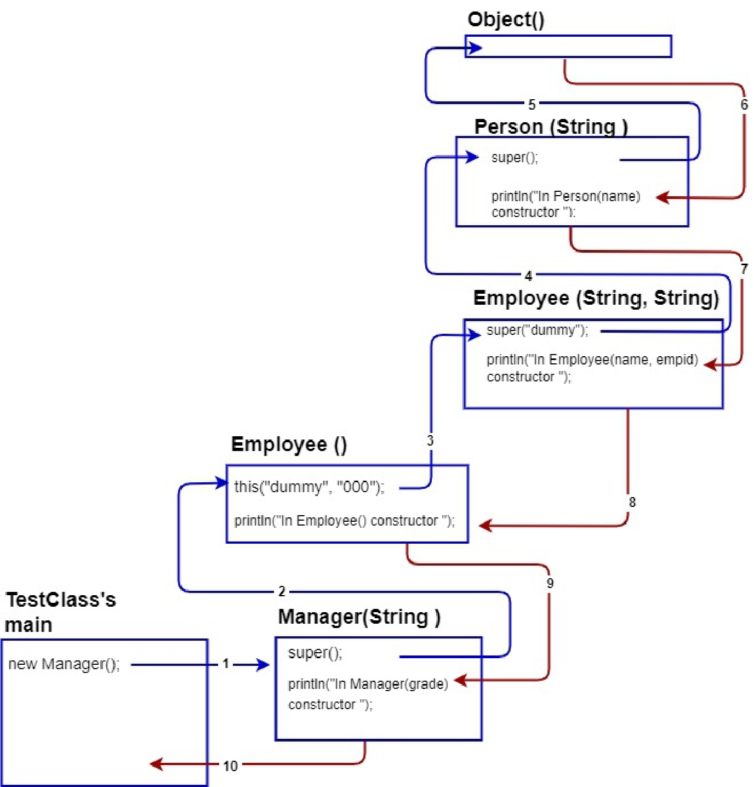

13.2.3 Sử dụng biến ngầm định “super”
Khi một method bị ghi đè bởi một lớp con (subclass), không một lớp (class) không liên quan nào có thể thực thi phiên bản lớp cha (superclass) của method đó trên một đối tượng lớp con (subclass object). Tuy nhiên,